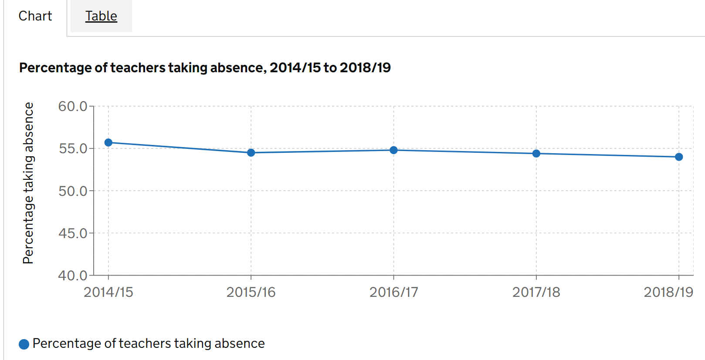
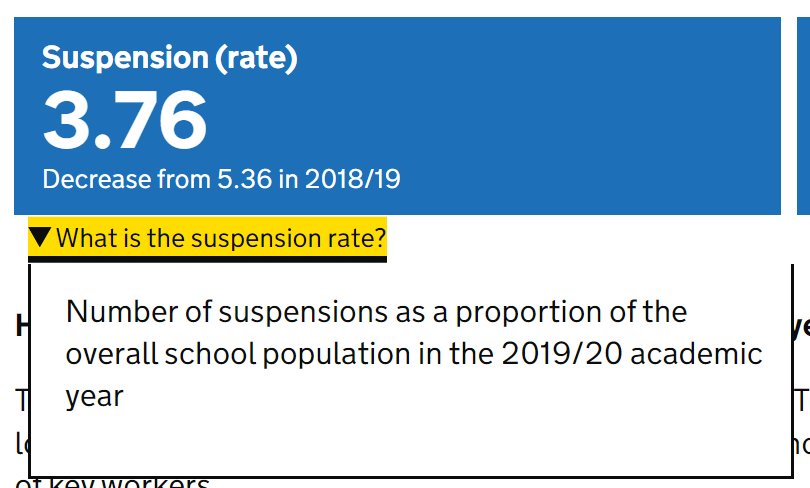

Files
Files can be downloaded from multiple areas across the platform and
often users will judge their contents based on the name alone. For
display names, it’s important we make it as clear as possible to users
as to what each file contains without cluttering the title with
information that is already available from the page around it, saving
detailed coverage for the data guidance.
File names
Full guidance for naming files.
The Education
and training statistics for the UK release has some good examples of
file names which clearly explain what is in the file, while falling well
under 35-50 characters in length, e.g.:
- uk_schools.csv
- uk_expenditure.csv
- uk_pupils.csv
The file names do not have time periods in them, making them easier
for users to make use of newer versions in future
Subject names
Full guidance for naming subject
files.
The
School Workforce Census applies this guidance well, with short and
simple titles that make sense to a non-expert, e.g.:
- Teacher pay
- Teacher retention
- Subjects taught
These titles are not cluttered with geographies and time periods,
which automatically populate in the subject metadata.
Data guidance
The public data guidance is a key element of your release, to help
direct users to the right file to download or build tables with. It is
frequently highlighted by users of our stats as a really helpful element
of EES. You will be prompted to fill in data guidance in the release
checklist. Any release that does not have a complete public data
guidance will not be blocked from approval and publishing.
Charts and tables
Charts and tables are key ways to highlight important information and
stories in your release. They should be clear, contain few footnotes
that are essential to interpreting the chart or table, and have good
descriptive alternative text so users with screen readers can understand
what is being visualised.
Accessibility and alt-text
Good alt-text descriptions in charts will not just repeat the title
of the chart, but instead describe the type of chart, what the data
coverage is, and what trends can be seen in the chart to a user
accessing the page with a screenreader.
The
school workforce census has a good example of alt-text for one of
their charts. The associated alt-text for the chart below is: “Line
chart showing the percentage of all teachers taking absence across all
state funded schools in England between the academic years 2014/15 and
2018/19. The chart shows a fall from 55.7% to 54.0% in this period.”

Featured tables
Full guidance on creating featured
tables.
Good featured tables have short, easy to understand titles, and point
users to commonly requested tables or other tables that might be
interesting to a wide range of users. For example, the pupil
absence in schools: autumn term release has a good example of a
clear title, with further information (including date and geographic
coverage) left in the description. Leaving these out of the main title
makes it much easier for users to navigate through multiple featured
tables:
Content
Clear, concise content is required to direct your users to the right
place, and keep them engaged with your release. Our content guidance page contains a raft of great advice
on how to structure your release and write for the general public.
Headlines
Full guidance on
creating a headline section
The Education,
health and care plans release has a good example of a headlines
section. There are a sensible number of key statistics, and the summary
below gives an overview of trends without diving into the numbers and
overwhelming the user.

The Exclusions
release has a good example of custom explanations under key stat tiles
to show users exactly what the numbers are describing:

Accordion content
Full guidance on writing
content for accordions
The parental
responsibility measures release has good examples of writing for the
public in accordion content. Content in each accordion is short and
follows the “pyramid” principle of having essential information at the
top, summarising the trend, then going into detail at the bottom.
Approvals and amendments
Keeping track of processes for approving and amending releases is
crucial for transparency. Internally, there should be clear paper trail
of who has signed off the release, and externally, users need to know if
anything in the release has changed from the last time they saw it.
Internal release status notes
Full guidance for creating public
amendment notes.
The COVID
attendance publication has fortnightly releases at the time of
writing, and the team have a good process for sign-off. This includes
detailed information at each stage to confirm who has signed off, who
has requested an action be taken, and who has carried out the
action.